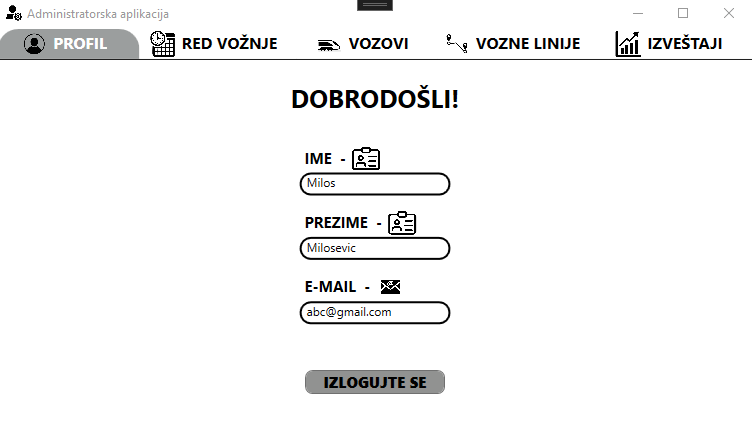
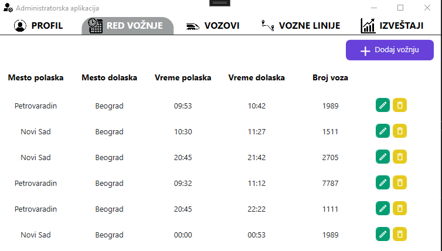
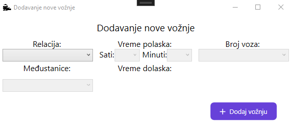
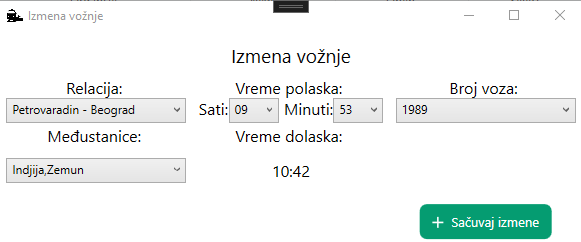
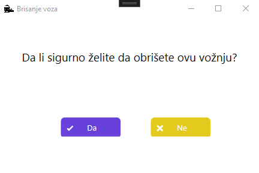
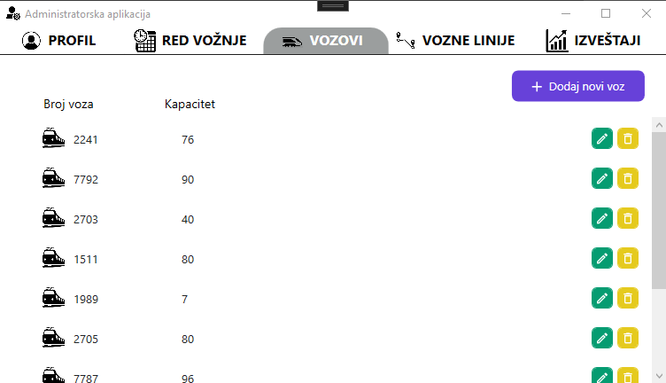
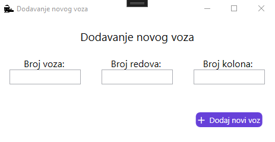
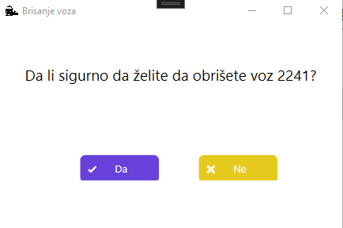

Menadžer može da pregleda osnove podatke o svom nalogu koje je popunio pri registraciji. Jedino ne može da vidi svoju šifru. Ispod ispisa podataka naloga nalazi se duge za odjavu sa aplikacije koja vraća menadžera na strnaicu za prijavu.
Pomoć za korišćenje menadžerske aplikacije
Sadržaj:
- Profil menadžera
- Pregled reda vožnje
- Dodavanje, izmena i brisanje vožnje
- Pregled vozova
- Dodavanje, izmena i brisanje vozova
- Pregled voznih linija
- Dodavanje izmena i brisanje voznih linija
- Pregled izveštaja
Profil menadžera
Pregled reda vožnje
Menadžer može na pregledu reda vožnje vidi sve vožnje u sistemu koje su mu prikazane u vidu redova tabele. Iznad tabele posotji opcija za dodavanje nove vožnje i pritiskom na to dugme otvara se prozor sa formom za unos podatak nove vožnje. Svaki red poseduje po dva dugmeta gde je jedno za brisanje i jedno za izmenu date vožnje.
Dodavanje, izmena i brisanje vožnje
Na formi za dodavanje nove vožnje menadžer mora da popuni sva polja forme pre nego što stisne dugme za potvrdu pravljenja nove vožnje. Ukoliko bar jedno polje ostane prazno, menadžer će biti sprečen da potvrdi formu.
Na formi za izmenu vožnje menadžer može da vidi već popunja polja koja može da izmeni i potvrdi izmene klikom na dugme "Izmeni vožnju".
Klikom na dugme za brisanje izabrane vožnje, otvara se prozor za potvrdu iste. Klikom na "Ne", zatvara se prozor i izmena neće biti. Dok klikom na dugme "Da" vožnja će biti izbrisana iz sistema.
Pregled vozova
Menadžer može na pregledu vozova vidi sve vozove u sistemu koje su mu prikazane u vidu redova tabele. Iznad tabele posotji opcija za dodavanje novog voza i pritiskom na to dugme otvara se prozor sa formom za unos podatak novog voza. Svaki red poseduje po dva dugmeta gde je jedno za brisanje i jedno za izmenu datog voza.
Dodavanje, izmena i brisanje vozova
Na formi za dodavanje novog voza menadžer mora da popuni sva polja forme pre nego što stisne dugme za potvrdu pravljenja novog voza. Ukoliko bar jedno polje ostane prazno, menadžer će biti sprečen da potvrdi formu.
Klikom na dugme za brisanje izabranog voza, otvara se prozor za potvrdu iste. Klikom na "Ne", zatvara se prozor i izmena neće biti. Dok klikom na dugme "Da" voz će biti izbrisan iz sistema.
